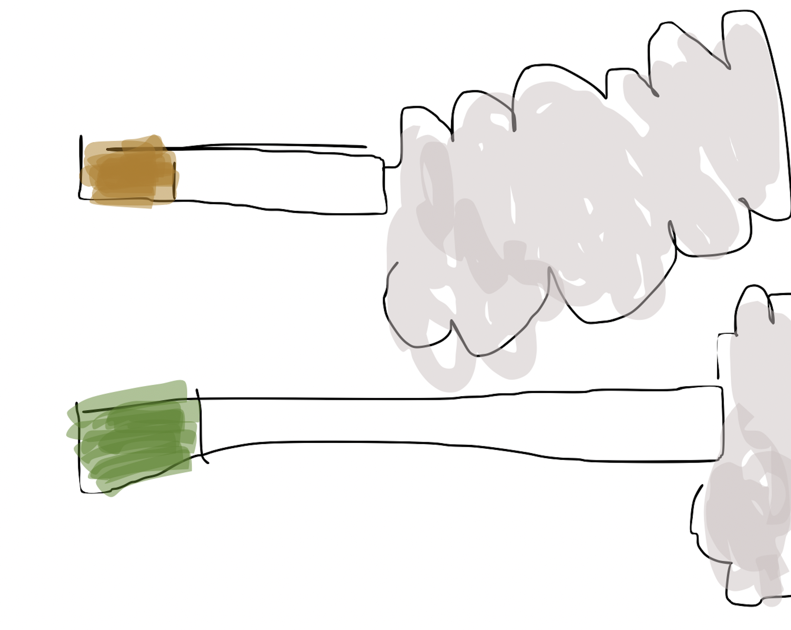

Newport 100’s
March 7, 2025
I’ve never really been a menthol guy but I figured if I’m doing this blog I’d better have a well rounded selection. Since this seems to be the most popular variety of menthol it seemed like a good place to start.
First impression: holy shit they’re long. I forgot to take a picture, so here is an *artistic interpretation* for comparison:
Fig 1. Gold; Fig 2 Newport 100. {text-align: center;}
It’s a shitty sleeting spring day here in the Windy City, which made the smoke feel weirdly icy going down my throat. Totally different from my usual Golds, which make your whole chest feel like a kiln. At first I was really not about it but I didn’t want to fail on my very first review, so I forced myself to choke down the whole thing, which took the entire length of “Not Too Late” and “Animal I Have Become” (roughly ten minutes). It did feel like a little much honestly, but the good thing is I had a reason to take a longer break than I normally would. Unfortunately this left the Honeywell office without their faithful security guy for all of 11 minutes. It would have been such a shame if something had happened...
By the end I was honestly feeling a little nauseous but also I didn’t hate it? It’s definitely a way different experience than I’m used to, kind of like sucking on McFlurry smog. I definitely tasted something minty, maybe a little sweetness in there too like cinnamon gum. My tastebuds are probably fucked in general just from smoking cigarettes, haha which come to think of it probably disqualifies me from even being able to do this blog? Oh well, you have to waste your life somehow. Or I do, at least.
In the end, I’m going to give Newport 100’s a 6/10. Would I buy a pack? Probably not, but if I ever went to bars I’d probably bum one. Who knows, maybe I’ll develop a taste for them once my stomach settles down. I kind of hope so because I have a full pack now. The more you know, right? Alright, stay tuned for more updates (or don’t haha) and leave me a request if you want.